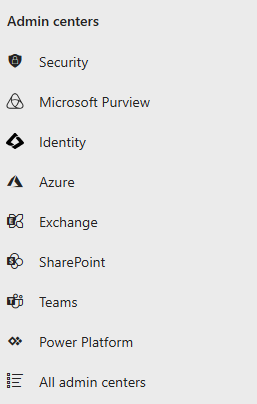
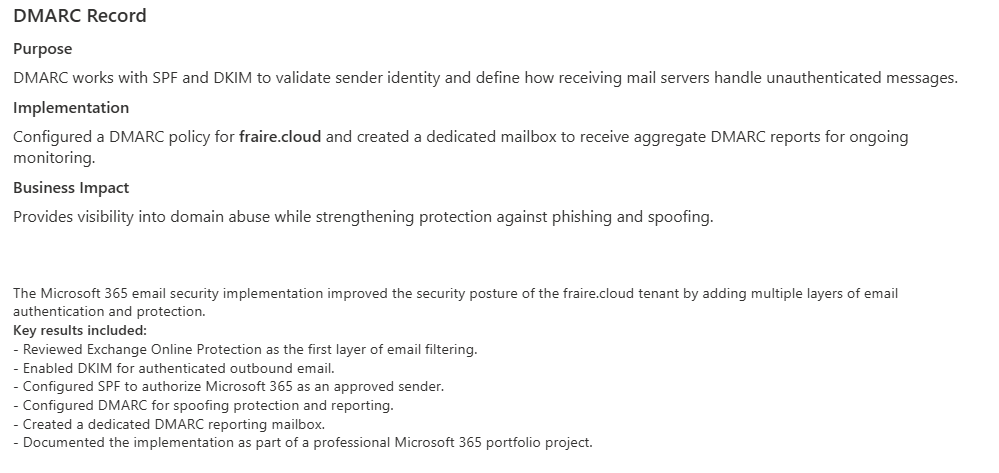
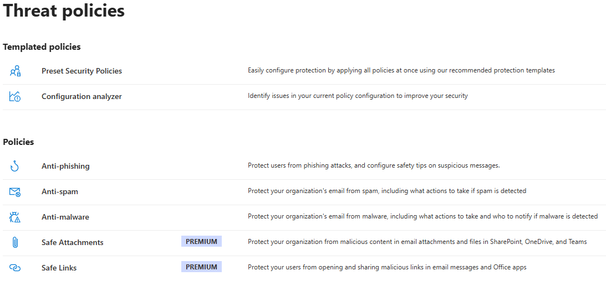
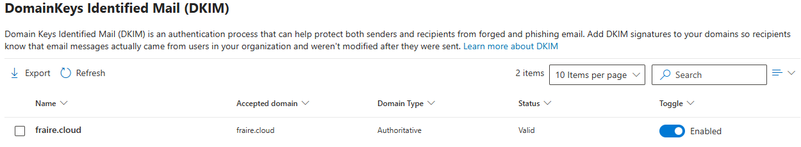

Microsoft 365 Enterprise Email Security
Exchange Online Protection · Microsoft Defender · DKIM · SPF · DMARC · Mail Flow

Executive Summary
Project Objective
This project demonstrates the implementation of enterprise Microsoft 365 email security best practices within the Fraire Cloud production tenant. The solution was designed to strengthen email security through layered protection using Exchange Online Protection (EOP), Microsoft Defender, DKIM, SPF, DMARC, anti-phishing policies, and secure mail flow validation.
The result is a hardened Microsoft 365 environment that helps protect users against phishing, spoofing, malware, and unauthorized email while improving domain reputation and secure mail delivery.
My Role
For this project, I independently designed, configured, validated, and documented Microsoft 365 email security controls within my Fraire Cloud production tenant. The implementation included Exchange Online Protection, Microsoft Defender, DKIM, SPF, DMARC, mail flow validation, and security monitoring.
Business Challenge
Organizations continue to face increasingly sophisticated email threats. This project focused on implementing layered Microsoft 365 protections to reduce risk while maintaining secure business communications.
- Phishing
- Spoofing
- Business email compromise
- Malware
- Unauthorized email access
Environment
Tenant
Fraire Cloud
Platform
Microsoft 365 Business Standard
Services
Exchange Online
Microsoft Defender
Exchange Admin Center
Microsoft 365 Admin Center
Technologies
DKIM · SPF · DMARC
Exchange Online Protection
Anti-phishing · Anti-spam
Mail-flow monitoring
Implementation Evidence
The following evidence demonstrates Exchange Online administration, message tracking, Microsoft Defender threat policies, and verified DKIM configuration.




Solution Architecture
Exchange Online Protection (EOP)
Purpose: Provides cloud-based filtering against spam, malware, phishing attempts, and malicious email before messages reach user mailboxes.
Implementation: Reviewed and validated baseline protection for inbound and outbound email.
Business Impact: Helps reduce email-based threats before they reach users while protecting business communications.
DKIM Configuration
Purpose: Digitally signs outbound email so receiving systems can verify that messages were sent from an authorized Microsoft 365 source and were not altered in transit.
Implementation: Enabled DKIM for fraire.cloud and verified a valid status.
Business Impact: Improves domain trust, secure delivery, and protection against impersonation.
SPF Record
Purpose: Identifies the mail servers authorized to send email on behalf of a domain.
Implementation: Configured a DNS TXT record authorizing Microsoft 365 Exchange Online Protection to send mail for fraire.cloud.
Business Impact: Helps prevent spoofing, improves recipient trust, and supports successful email delivery.
DMARC Record
Purpose: Works with SPF and DKIM to validate sender identity and define how receiving systems handle unauthenticated messages.
Implementation: Configured a DMARC policy and created a dedicated mailbox to receive aggregate reports.
Business Impact: Provides visibility into domain abuse while strengthening protection against phishing and spoofing.
Project Summary
The implementation strengthened the Fraire Cloud production tenant through layered email authentication and protection.
- Reviewed Exchange Online Protection as the first layer of filtering
- Enabled DKIM for authenticated outbound email
- Configured SPF to authorize Microsoft 365 as an approved sender
- Configured DMARC for spoofing protection and reporting
- Created a dedicated DMARC reporting mailbox
- Documented the complete implementation
Project Outcome
Successfully implemented layered Microsoft 365 email authentication and protection using Microsoft security best practices.
Skills Demonstrated
Microsoft 365 Administration
Microsoft 365 Admin Center
Exchange Online
Exchange Admin Center
Microsoft Defender
Email Security
Exchange Online Protection
DKIM · SPF · DMARC
Email Authentication
Anti-spoofing Protection
Professional Skills
Technical Documentation
Security Hardening
Troubleshooting
Portfolio Presentation